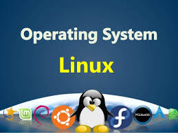

linux operating system

Links:
The Linux kernel originated in 1991, as a project of Linus Torvalds, while a university student in Finland. He posted information about his project on a newsgroup for computer students and programmers, and received support and assistance from volunteers who succeeded in creating a complete and functional kernel.
Linux is Unix-like, but was developed without any Unix code, unlike BSD and its variants. Because of its open license model, the Linux kernel code is available for study and modification, which resulted in its use on a wide range of computing machinery from supercomputers to smart-watches.
Although estimates suggest that Linux is used on only 1.82% of all "desktop" (or laptop) PCs,it has been widely adopted for use in servers and embedded systems such as cell phones. Linux has superseded Unix on many platforms and is used on most supercomputers including the top 385. Many of the same computers are also on Green500 (but in different order), and Linux runs on the top 10. Linux is also commonly used on other small energy-efficient computers, such as smartphones and smartwatches.
The Linux kernel is used in some popular distributions, such as Red Hat, Debian, Ubuntu, Linux Mint and Google's Android, Chrome OS, and Chromium OS.